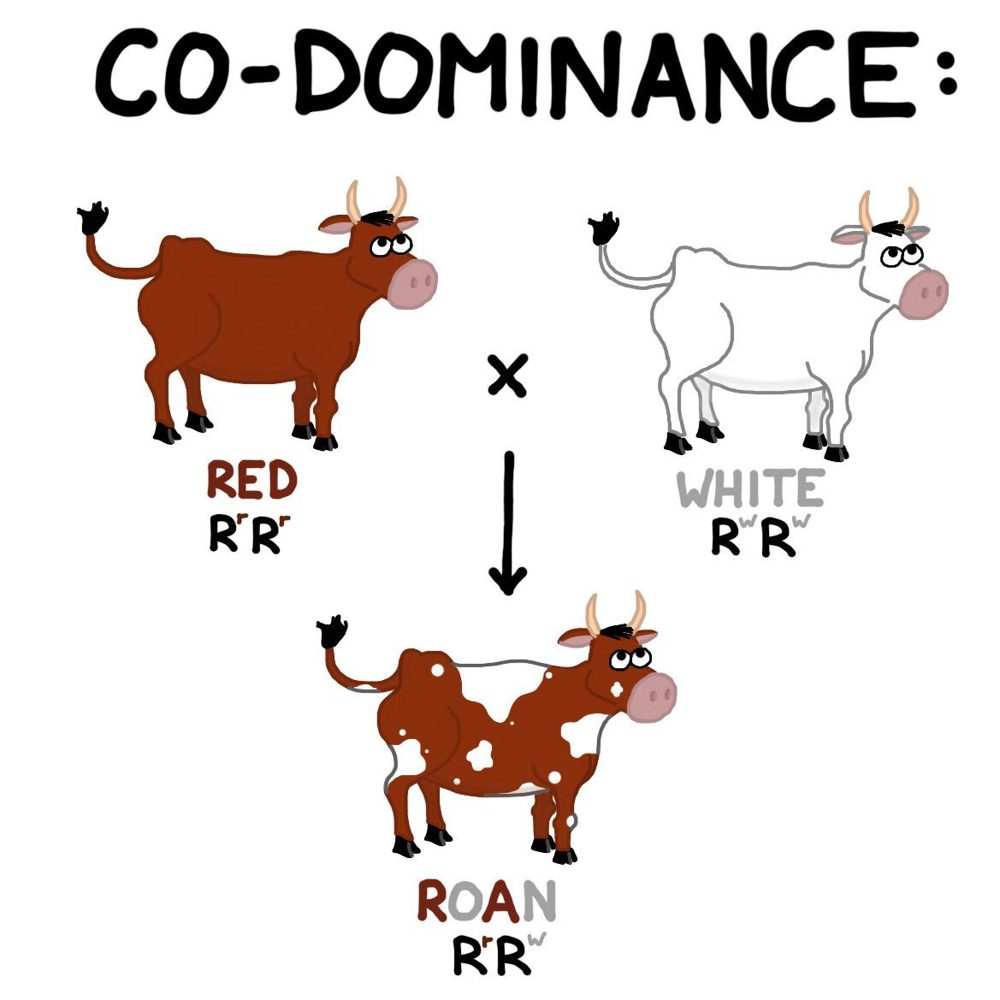
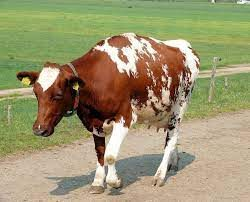
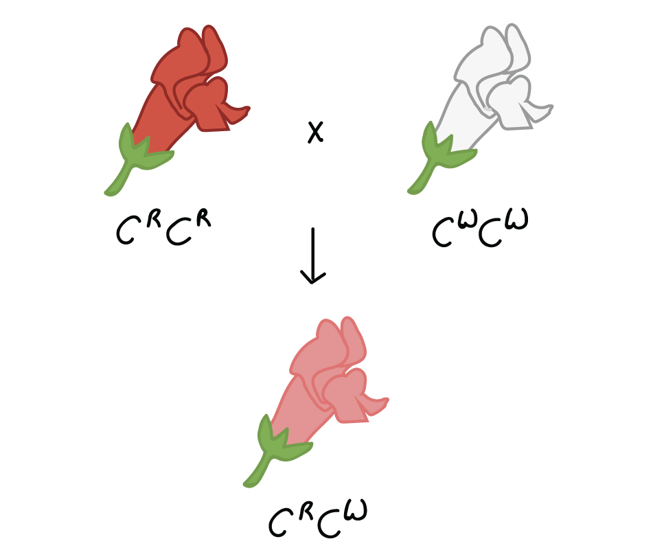
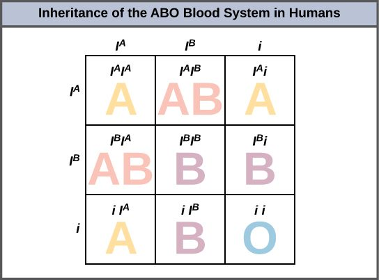
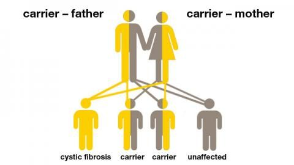
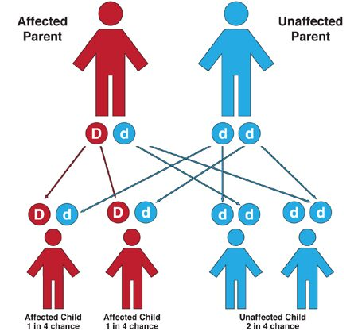

Complete dominance, codominance and incomplete dominance
- Complete dominance: one allele completely masks another. The traits Mendel studied were all complete dominance, and a trait controlled by a single gene in this way is called a Mendelian trait.
- Polygenic traits are controlled by two or more genes, e.g. human height, eye colour and skin colour.
Codominance
In codominance, both alleles are expressed equally. The notation uses superscripts.


Incomplete dominance
In incomplete dominance, the two alleles give an intermediate (in-between) phenotype. The same superscript notation is used: in snapdragons, CRCR is red, CWCW is white, and CRCW is pink.

Two roan cattle (CRCW × CRCW) are crossed. Their offspring would be % red, % roan and % white.
Multiple alleles: human blood groups
The human ABO blood groups (A, B, AB and O) are an example of multiple alleles and codominance. The gene is represented by I:
- IA and IB are codominant with each other.
- i is recessive to both.
- All three alleles make different versions of the same protein. The i allele makes a protein with no antigen properties, while IA and IB make proteins that act as antigens, causing an antibody reaction when mixed with blood from certain people.
| Genotype | Blood group (phenotype) |
|---|---|
| IAIA or IAi | A |
| IBIB or IBi | B |
| IAIB | AB |
| ii | O |


In a controversial paternity suit, a woman (genotype IBi) accuses a man of fathering her daughter, who has blood group O. Blood tests show the man has blood group A. Could he be the real father?
Yes, he could be. The daughter is group O, so her genotype is ii: she got one i from each parent. The mother (IBi) can give i. The man is group A, so he is either IAIA or IAi. If he is IAi, he could pass on an i, so he could be the father. (If he were IAIA, he couldn't.) The blood test alone can't prove that he is the father.
Genetic diseases
Recessive genetic diseases
Some genetic diseases only occur when the offspring inherits two recessive alleles: they are homozygous recessive. Heterozygous people are carriers: they don't have the disease but can pass on the allele.
- Cystic fibrosis: thick, sticky mucus affecting the lungs and digestion.
- Sickle cell anaemia: red blood cells become sickle-shaped in low oxygen and block capillaries, causing intense pain and organ damage.
- Tay–Sachs disease: infants seem normal for six months, then mental and physical abilities deteriorate; death usually occurs before age 4 or 5.
- Albinism: a lack of melanin pigment in the eyes, skin and hair, giving a high risk of skin cancer and sensitivity to bright light, but otherwise normal fertility and lifespan.

Dominant genetic diseases
Some genetic diseases need only one copy of the mutated allele. Affected people are homozygous dominant or heterozygous, and each affected person usually has an affected parent.
- Huntington's disease: symptoms (clumsiness, twitching and nervous tics) usually start in a person's 40s or 50s, followed by death within 10 to 20 years. Genetic testing can identify carriers, even embryos.
- Marfan syndrome: a disorder of connective tissue, which becomes weak and "floppy". People are typically tall, with long limbs and long thin fingers; the most serious complications affect the heart valves and aorta.

The hereditary deafness once common on Martha's Vineyard is recessive: D = hearing, d = deafness (dd is deaf). What is the probability of each couple having a deaf child?
- Two homozygous dominant parents (DD × DD): %
- Two heterozygous parents (Dd × Dd): %
- Two homozygous recessive parents (dd × dd): %
Huntington's disease is dominant (H). A heterozygous parent (Hh) has children with an unaffected parent (hh).
- The expected genotype ratio of the offspring is .
- The chance that each child develops Huntington's disease is %.